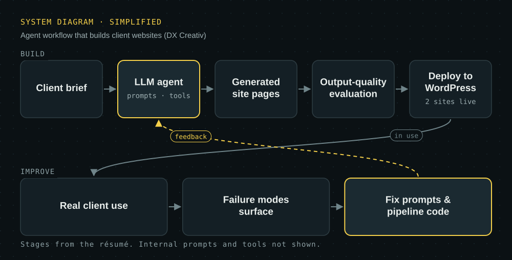

Agent systems for web development
The LLM agent workflow DX Creativ uses to turn a client brief into a working website.
- Problem
- Hand-building similar small-business sites is slow; a raw model call invents details and breaks structure.
- My role
- Prompt design, tool orchestration, output evaluation and pipeline fixes; built and deployed 2 client sites through it.
- Notable
- Failures from real client use feed back into the system instead of being patched per site.
- LLM agents
- Python
- Evaluation
- WordPress